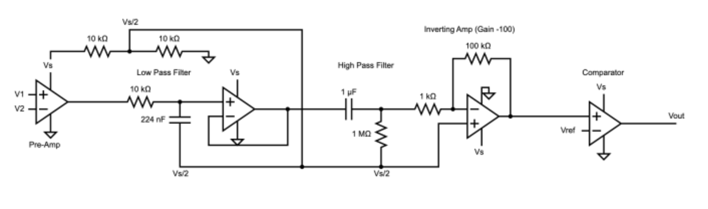
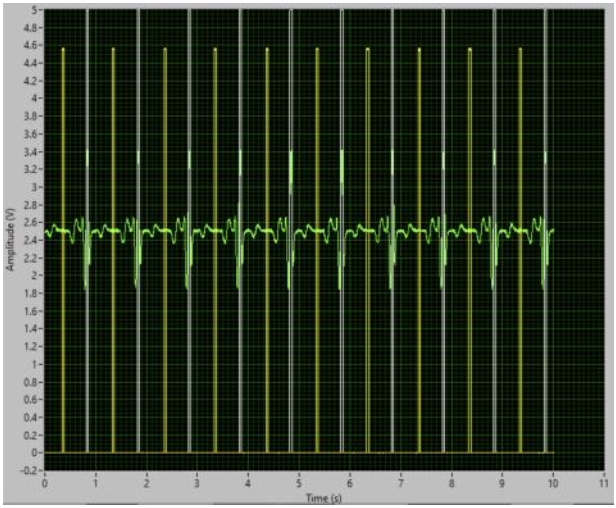
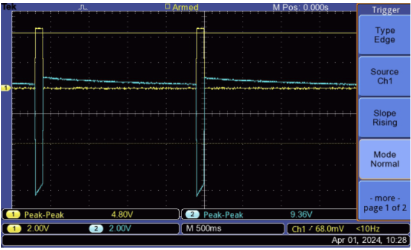
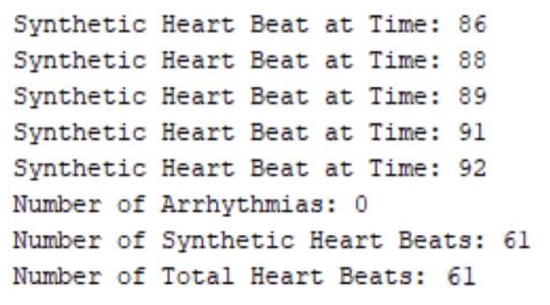

Building a VVI Pacemaker
April 2024
Arduino • C/C++ • ECG • Analog Circuits • Signal Processing • Embedded Systems
I built a closed-loop VVI pacemaker that could acquire an ECG, detect ventricular activity, estimate heart rate, and electrically stimulate cardiac tissue when the intrinsic rhythm became too slow. The project combined analog signal conditioning, embedded firmware, real-time control, electrical stimulation, and persistent event storage.
The Goal
A pacemaker should not simply generate electrical pulses at a fixed frequency. Ideally, it should first determine whether the heart is producing its own beats and intervene only when necessary.
That is the basic idea behind a VVI pacemaker. The first V means that the ventricle is paced, the second V means that ventricular activity is sensed, and I means that pacing is inhibited when natural ventricular activity is detected.
I designed the system around that feedback loop: sense the heart, determine whether a beat occurred, wait for the next beat, and stimulate only if it does not arrive soon enough.
System Architecture
I divided the pacemaker into three main subsystems: sensing, processing, and stimulation.
The analog front end first acquired and conditioned the ECG. An Arduino then measured the timing between ventricular beats and implemented the pacing logic. Finally, a transistor-controlled stimulation circuit delivered an electrical pulse when the pacing condition was met.

Turning a Raw ECG Into Something a Microcontroller Can Use
The first challenge was signal quality. Cardiac electrical signals are small, and the waveform can easily be buried by baseline drift, environmental noise, and interference.
I started with an AD623 instrumentation amplifier to perform differential acquisition from the cardiac electrodes. Differential sensing helped reject common-mode noise while providing an initial gain to the ECG.
The signal then passed through an analog band-pass stage. A high-pass filter removed slow baseline changes and DC drift, while a low-pass filter attenuated higher-frequency noise. I placed a voltage follower between the stages to prevent the two RC filters from loading one another.
After filtering, I amplified the signal again so that its amplitude was large enough for reliable analysis by the Arduino.
Rather than asking the microcontroller to detect an R-wave entirely in software, I also used an analog comparator. The comparator generated a clean pulse whenever the amplified ECG crossed the selected R-wave threshold.
This effectively converted a noisy physiological waveform into two useful signals: the digitized ECG itself and a clean event signal marking ventricular contractions.
Detecting Heartbeats in Firmware
The conditioned ECG and comparator output were connected to an Arduino Nano. I sampled the signal at approximately 200 samples per second, corresponding to one measurement every 5 milliseconds.
Each comparator pulse indicated that an R-wave had occurred. The firmware recorded the time of each event and calculated the interval between consecutive R-waves.
Heart rate could then be calculated from the R-R interval:
HR = 60 / R-R Interval
This gave the controller a continuously updated estimate of the intrinsic ventricular rate.

The VVI Control Loop
The pacing algorithm was built around a quantity called the lower rate interval, or LRI.
The LRI defines the longest allowable time between ventricular beats. For example, a minimum rate of 60 BPM corresponds to an interval of one second.
Every time a natural R-wave was detected, the timing interval reset. If another beat arrived before the LRI expired, the controller remained idle.
If no ventricular beat arrived before the timer exceeded the LRI, the Arduino issued a pacing command.
This produces the central behavior of a demand pacemaker: natural beats suppress pacing, while missing beats trigger pacing.

Generating the Pacing Pulse
The Arduino was responsible for deciding when to pace, but it was not used as the stimulation source itself.
Instead, its digital output controlled an NPN transistor that acted as an electronic switch in a capacitor-based stimulation circuit.
During charging, the capacitor stored energy from the supply. When the transistor switched states, that stored energy generated a sharp voltage pulse across the cardiac load.
Before building the final pacing parameters, we experimentally characterized the cardiac tissue. The measured rheobase current was approximately 250 µA, and the chronaxie was approximately 20 ms.
I therefore configured stimulation near twice both values: approximately 0.5 mA for 40 ms. This was sufficient to initiate cardiac contraction during testing.

Adding Persistent Event Memory
I also wanted the pacemaker to retain information about what happened even after power was removed.
I implemented this using the Arduino's EEPROM. The firmware stored natural heartbeats, paced heartbeats, arrhythmia events, timestamps, and a short history of ECG measurements.
Because EEPROM capacity was limited, I treated the ECG storage area as a circular buffer. New samples continuously replaced the oldest ones once the allocated region was full.
Cardiac events were encoded separately by storing an event type followed by its timestamp. This made it possible to reconstruct the history of natural and synthetic beats after an experiment.
One of the more interesting results was that we could recover the stored cardiac event data nine days after the original experiment.

How Well Did It Work?
I first characterized the analog front end. The theoretical gain of the complete sensing circuit was approximately -1160, while the experimentally measured gain was approximately -1130, a difference of about 2.6%.
I then tested the heart-rate measurement algorithm using synthetic ECG signals with known frequencies.
| Expected HR | Measured HR | Error |
|---|---|---|
| 60 BPM | 59.8 BPM | 0.31% |
| 120 BPM | 119.8 BPM | 0.18% |
| 150 BPM | 149.6 BPM | 0.24% |
| 180 BPM | 161.6 BPM | 10.2% |
| 240 BPM | 173.3 BPM | 27.7% |
Between 60 and 150 BPM, the calculated rate stayed within 0.31% of the expected value.
Accuracy fell at higher rates. The main limitation was temporal resolution: at 200 samples per second, the firmware only receives a new ECG measurement every 5 ms. At shorter R-R intervals, that quantization becomes a larger fraction of the heartbeat period.
Increasing the sampling rate would therefore be one of the most direct improvements to the design.
The Most Important Test: Closed-Loop Pacing
Measuring an ECG and generating a pulse independently was useful, but the real objective was to make the complete feedback system work on cardiac tissue.
During the final experiment, the pacemaker continuously monitored the frog electrogram. When intrinsic activity failed to occur before the lower rate interval expired, the stimulator fired.
The resulting electrogram showed both natural and paced heartbeats. More importantly, after stimulation produced a contraction, the system could detect subsequent natural activity and inhibit the next pacing pulse.
That behavior demonstrated the entire loop working together: sensing, heartbeat detection, timing, pacing, physiological response, and inhibition of unnecessary stimulation.

What I Learned
What made this project interesting was that no single component was enough on its own.
The analog circuit had to produce a clean enough ECG for the comparator. The comparator had to provide reliable timing events for the firmware. The firmware had to correctly implement the pacing interval. The stimulation circuitry then had to produce a physiologically meaningful output.
The result was a true closed-loop embedded system: it sensed a biological process, extracted useful information from that signal, made a real-time control decision, actuated on the physical system, and then observed the resulting response.
If I continued the project, the first improvements I would make would be increasing the ECG sampling rate, expanding nonvolatile storage, and introducing a short sensing blanking period during stimulation so that the pacing artifact could not interfere with R-wave detection.